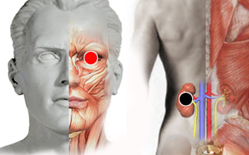

Fobias
Par
riñon (I) - ojo (I)

Generalidades:
Fobias a diversas cosas o situaciones. También puede referirse a miedos focalizados en una situación u objeto, las llamadas fobias como:
El miedo puede estar relacionado con experiencias traumáticas de la vida actual, o de vidas pasadas; o bien, a proyección de emociones como ira, culpa, odio.